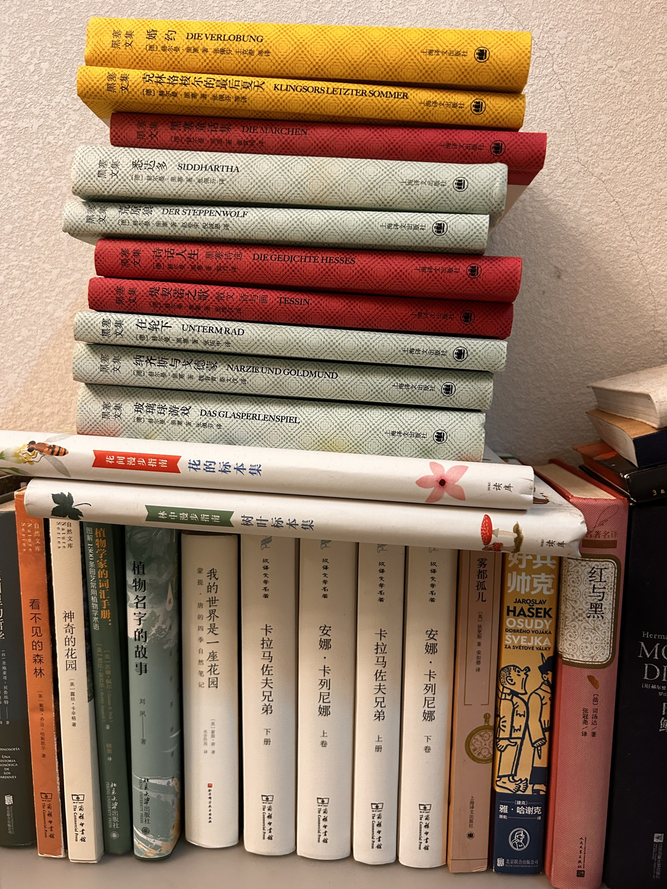

客厅中

- 自然文库 Nature Series 看不见的森林 [美]戴维·乔治·哈斯凯尔 著 商务印书馆 The Commercial Press
- 神奇的花园 [美]露丝·卡辛格 著 商务印书馆
- 植物学家的词汇手册：图解1300条园艺常用植物学术语 [美]芭比·安吉尔 苏珊·佩尔 PEKING UNIVERSITY PRESS
- 黑塞文集 婚约 DIE VERLOBUNG [德]赫尔曼·黑塞 著 张佩芬 等译
- 黑塞文集 克林格梭尔的最后夏天 KLINGSORS LETZTER SOMMER [德]赫尔曼·黑塞 著 张佩芬 等译
- 黑塞文集 黑塞童话集 DIE MÄRCHEN [德]赫尔曼·黑塞 著 张佩芬 等译
- 黑塞文集 悉达多 SIDDHARTHA [德]赫尔曼·黑塞 著 张佩芬 等译
- 黑塞文集 荒原狼 DER STEPPENWOLF [德]赫尔曼·黑塞 著 张佩芬 等译
- 黑塞文集 诗话人生 黑塞诗选 DIE GEDICHTE HESSES [德]赫尔曼·黑塞 著 张佩芬 等译
- 黑塞文集 堤契诺之歌 散文诗与画 TESSIN [德]赫尔曼·黑塞 著 张佩芬 等译
- 黑塞文集 在轮下 UNTERM RAD [德]赫尔曼·黑塞 著 张佩芬 等译
- 黑塞文集 纳齐斯与戈德蒙 NARZISS UND GOLDMUND [德]赫尔曼·黑塞 著 张佩芬 等译
- 黑塞文集 玻璃球游戏 DAS GLASPERLENSPIEL [德]赫尔曼·黑塞 著 张佩芬 等译
- 花的标本集：花间漫步指南 读库
- 植物名字的故事 刘夙 著 北京大学出版社
- 树叶标本集：林中漫步指南 读库
- 蒙提·唐的四季自然笔记 我的世界是一座花园 光合作用
- 汉译文学名著 卡拉马佐夫兄弟 下册 商务印书馆 The Commercial Press
- 汉译文学名著 安娜·卡列尼娜 上卷 商务印书馆 The Commercial Press
- 汉译文学名著 卡拉马佐夫兄弟 上册 商务印书馆 The Commercial Press
- 汉译文学名著 安娜·卡列尼娜 下卷 商务印书馆 The Commercial Press
- 雾都孤儿 [英]狄更斯 著 荣如德 译 上海译文出版社
- 好兵帅克 OSudy dobrého vojáka Švejka za světové války Jaroslav Hašek [捷克]雅·哈谢克 北京联合出版公司
- 红与黑 [法]司汤达 著 张冠尧 译
共 24 本书，上传于 2026-10-04 10:30:36。